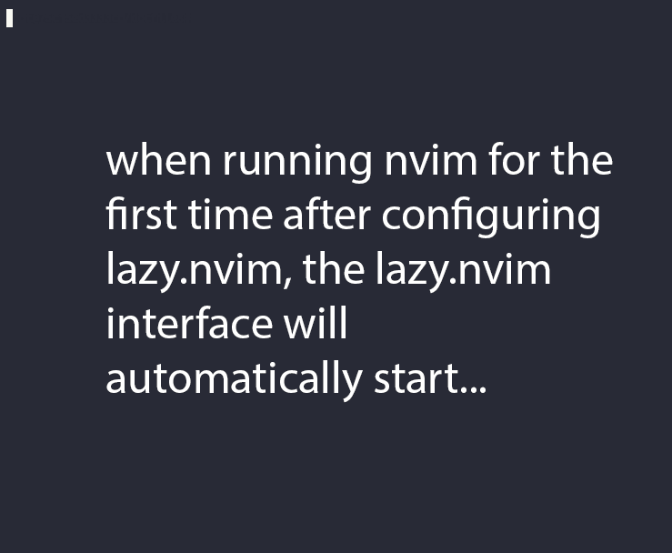

Nvim plugins¶
Plugins are configured in lua/plugins/*.lua.
Plugins are configured using lazy.nvim. This supports lazy-loading of plugins to keep a snappy startup time, and only load plugins when they’re needed. See Migrating to Neovim Lua config for my rationale on that.
Quick-reference on lazy.nvim
Each plugin spec in lua/plugins/*.lua is a table. The first property is
the name of the plugin. Other properties:
lazy: only load when requested by something else. Saves on initial load time, but use this with care since it can get confusing.ft: only load the plugin when editing this filetype. Implies lazy=true.cmd: only load the plugin when first running this command. Implies lazy=true.keys: only load the plugin when using these keymappings. Implies lazy=true.config: run this stuff after the plugin loads. If config = true, just run the default setup for the plugin.init: similar to config, but used for pure-vim plugins
If keys are specified, this is the only place they need to be mapped, and they
will make their way into the which-key menu even if they trigger a lazy-loaded
plugin. Use the desc argument to give which-key a description to use.
Note
Don’t like a plugin? Find it in lua/plugins/*.lua and add enabled
= false next to where the plugin is named. For example:
{ "user/plugin-name", enabled = false },
Or delete the file completely.
screencast of lazy.nvim setting up plugins

Because of how frequently nvim changes, each plugin section below has
a changelog. Since I have reorganized files over the years, the changelogs show
the mention of a plugin in a commit message, in a filename, or as part of the
changeset of a commit. Checking all of these things is an attempt to catch all
of the changes. This may be a little overzealous (for example the trouble
plugin picks up commits related to troubleshooting) but I’ve opted to err on
the side of completeness.
Plugin list¶
I’ve organized the plugins into broad categories:
Interfaces¶
These plugins add different interfaces unrelated to git (interfaces related to git are described above).
telescope¶
Telescope provides a floating window with fuzzy-search selection.
Searching and selecting what, you ask? Pretty much anything you hook it up to.
Type in the text box to filter the list. Hit enter to select (and open the selected file in a new buffer). Hit Esc twice to exit.
command |
description |
|---|---|
<leader>ff |
Opens floating window for fuzzy file search under current directory. Type
to filter filenames, press Enter to open selected file, Esc to cancel.
Handy alternative to |
<leader>fg |
Search directory for string. This is like using ripgrep, but in vim. Selecting entry takes you right to the line. |
<leader>/ |
Opens floating window for fuzzy search within current buffer. Type to filter matching lines, Enter to jump to selected line, Esc to cancel |
<leader>fc |
Opens floating window to search for code symbols (functions, classes, variables) in the current buffer using Treesitter. Type to filter, Enter to jump to symbol, Esc to cancel |
Other useful things you can do with Telescope:
:Telescope highlightsto see the currently set highlights for the colorscheme.:Telescope builtinto see a picker of all the built-in pickers. Selecting one opens that picker. Very meta. But also very interesting for poking around to see what’s configured.:Telescope planetsto use a telescope:Telescope autocommands,:Telescope commands,:Telescope vim_options,:Telescope man_pagesare some other built-in pickers that are interesting to browse through.
nvim-tree¶
nvim-tree provides a filesystem tree for browsing.
command |
description |
|---|---|
<leader>fb |
Toggles file browser sidebar showing directory tree. Navigate with j/k, Enter to open files/folders, q to close |
- (within browser) |
Navigate up one directory level |
Enter (within browser) |
Opens file in editor, expands directory to show contents, or collapses open directory |
ga (within browser) |
Add file to git. Useful when you have fugitive also open, and want to add a file from an as-yet-untracked directory |
gu (within browser) |
Unstage file to git. Useful when you have fugitive also open |
The window-switching shortcuts <leader>w and <leader>q (move to windows left and right respectively; see toggleterm) also work.
which-key¶
which-key displays a popup with possible key bindings of the command you started typing. This is wonderful for discovering commands you didn’t know about, or have forgotten.
The window will appear 1 second after pressing a key. For example, try pressing the leader key (,) and waiting a second to see all the keys you can press after the leader and what the behavior will be.
The length of this delay is configured with vim.o.timeoutlen, e.g.
vim.o.timeoutlen=500 for half a sectond). There is no timeout though for
registers (") or marks (') or spelling (z= over a word).
You can hit a displayed key to execute the command, or if it’s a multi-key
command (typically indicated with a +prefix to show there’s more), then
that will take you to the next menu.
Use <Backspace> to back out a menu. In fact, pressing any key, waiting for the menu, and then hitting backspace will give a list of all the default mapped keys in vim.
There is currently no extra configuration. Instead, when a key is mapped
(either in lua/mappings.lua or lua/plugins/*.lua), an
additional parameter desc = "description of mapping" is included. This
allows which-key to show a description. Mappings with no descriptions will
still be shown.
-- example mapping using vim.keymap.set, with description
vim.keymap.set('n', '<leader>1', ':bfirst<CR>',
{ desc = "First buffer" })
-- example mapping when inside a plugin spec
{ "plugin/plugin-name",
keys = {
{ "<leader>1", ":bfirst<CR>", desc = "First buffer" },
}
}
command |
description |
|---|---|
any |
after 1 second, shows a popup menu |
<Backspace> |
Goes back a menu |
z= (over a word) |
Show popup with spelling suggestions, use indicated character to select |
' |
Show popup with list of marks |
" |
Show popup with list of registers |
aerial¶
aerial provides a navigation sidebar for quickly moving around code (for example, jumping to functions or classes or methods). For markdown or ReStructured Text, it acts like a table of contents.
command |
description |
|---|---|
<leader>a |
Toggles aerial navigation sidebar showing code structure outline (functions, classes, methods). Navigate with j/k, Enter to jump to item, q to close |
{ and } |
Jump to previous ({) or next (}) code item in the buffer (function, class, snakemake rule, markdown section) |
For navigating complex codebases, there are other keys that are automatically mapped, which you can read about in the README for aerial.
punchlist.nvim¶
punchlist is a plugin to make annotations on files, like using comments in Google Docs or Microsoft Word. The annotations are stored in a hidden directory in the repo, but are visually attached to text in a buffer.
Annotations move with the text that you edit, and can be cut-and-paste if editing is too disruptive to track position automatically.
A summary can be shown that can be pasted into LLM agents to direct them right to the files and lines of interest.
The keymaps use the <localleader>, by default :kbd:``.
command |
description |
|---|---|
<localleader>pd |
Add a DISCUSS annotation |
<localleader>pf |
Add a FIX annotation |
<localleader>ps |
Show the list of all annotations, ready to copy |
<localleader>px |
Cut an annotation |
<localleader>pv |
Paste an annotation on current line/selection |
<localleader>pr |
Re-anchor an annotation |
<localleader>pc |
Clear all annotations in repo (asks for confirmation) |
Visuals¶
These plugins add various visual enhancements to nvim.
bufferline¶
bufferline.nvim provides the tabs along the top.
command |
description |
|---|---|
<leader>b, then type highlighted letter in tab |
Enters buffer-pick mode: each open buffer tab shows a letter. Type that letter to switch to the corresponding buffer |
beacon¶
Beacon provides an animated marker to show where the cursor is.
command |
description |
|---|---|
n or N after search |
Flash beacon at search hit |
lualine¶
lualine provides the status line along the bottom.
No additional commands configured, but see the homepage for all the things you can add to it.
indent-blankline¶
indent-blankline shows vertical lines where there is indentation, and highlights one of these vertical lines to indicate the current scope.
No additional commands configured. However, depending on the font you use, you may want to play around with the symbol used.
render-markdown¶
render-markdown provides a nicer reading experience for markdown files. This includes bulleted list and checkbox icons, fancy table rendering, colored background for code blocks, and more.
In my testing I found it to be more configurable and performant than the
obsidian.nvim equivalent functionality, and in daler/zenburn.nvim I’ve
added highlight groups for this plugin.
Some notes about its behavior:
It uses “conceal” functionality to replace things like
-(for bulleted lists) with the unicode•. It hides URLs and only shows the link text (like a website does)It’s configured to differentiate between a web link (http) and an internal link (no http) and show an icon for an internal link.
It has functionality for parsing headlines and making them stand out more in a document. The actual styling of headlines is configured in the colorscheme.
Code blocks have an icon indicating their language, and the background of code blocks is different from surrounding text.
Tables are rendered nicely
This plugin is specifically disabled for RMarkdown files, which are typically heavy on the source code, and the background of code chunks can get distracting when entering and exiting insert mode. However, this plugin can be useful when reviewing a long RMarkdown file to focus on the narrative text.
command |
description |
|---|---|
<leader>rm |
Toggles render-markdown on/off for the current markdown file. When on, shows enhanced formatting (bullets, tables, code blocks). When off, shows raw markdown. Mnemonic: [r]ender [m]arkdown |
nvim-colorizer¶
nvim-colorizer is a high-performance color highlighter. It converts hex codes to their actual colors.
command |
description |
|---|---|
|
Toggle colorizing of hex codes |
lush¶
lush is a helper for adjusting colors in a colorscheme.
Open up a color scheme file, run :Lushify, and you can use <C-a> and
<C-x> to increase/decrease values. This gives you live feedback as
you’re working. See the homepage linked above for a demo, and zenfade for a colorscheme that used lush (and
so supports it well).
Everything else¶
These plugins don’t have a clear categorization. That doesn’t mean they’re not super helpful though!
vim-commentary¶
vim-commentary lets you easily toggle comments on lines or blocks of code.
command |
description |
|---|---|
gc on a visual selection |
toggle comment |
gcc on a single line |
toggle comment |
accelerated-jk¶
accelerated-jk speeds up j and k movements: longer presses will jump more and more lines.
In particular, you might want to tune the acceleration curve depending on your system’s keyboard repeat rate settings – see the config file for an explanation of how to tweak.
command |
description |
|---|---|
j, k |
Keep holding for increasing vertical scroll speed |
blink¶
blink offers autocomplete.
In this config, I’ve chosen to mimic the bash style of completion, the commands documented here reflect that. I’ve also disabled the menu popping up all the time. There are a lot of ways you can customize this yourself though – see the blink docs.
command |
description |
|---|---|
<C-space> |
Open completion menu |
<Tab> (when typing and the cursor is in a word) |
Open completion menu |
<Tab>, <Shift-Tab> (in menu) |
Next, previous entry |
Enter (when menu visible) |
Select entry |
up/down arrow (in menu) |
Next, previous entry |
treesitter¶
treesitter is a parsing library that underpins many other plugins.
You install a parser for a language, and it figures out which tokens are functions, classes, variables, modules, etc. Then it’s up to other plugins to do something with that. For example, colorschemes can use that information, or you can select text based on its semantic meaning within the programming language (like easily select an entire function, or the body of a for-loop).
Things have been changing recently in the treesitter-related world. This config
now uses the main branch, which requires nvim 0.12+, tree-sitter-cli
0.26.1+, and a C compiler.
Both --install-neovim and --nvim-test-drive install the CLI and all
parsers listed in the config. The normal installation runs this setup
headlessly after restoring the configured plugins. This requires running
--dotfiles first so that ~/.config/nvim exists.
To set them up manually instead, first open nvim and install the CLI with Mason:
:MasonInstall tree-sitter-cli
Then install all parsers listed in the config:
:lua require("nvim-treesitter").install(require("plugins.treesitter")[1].opts.parsers)
Installation runs asynchronously. Parsers are stored in nvim-treesitter’s
default ~/.local/share/nvim/site/parser directory. Use
:checkhealth nvim-treesitter to check the installed parsers.
On a Mac, the compiler may need XCode Command Line Tools to be installed.
A fresh Ubuntu installation will need
sudo apt install build-essentialRHEL/Fedora will need
sudo dnf install 'Development Tools'(and may need the EPEL repo enabled).Alternatively, if you don’t have root access, you can install compiler packages via conda,
Alternatively, remove parsers from the parsers table in
~/.config/nvim/lua/plugins/treesitter.lua; removed languages will not
have treesitter-enabled syntax highlighting.
command |
description |
|---|---|
<leader>cs |
Start incremental selection |
<Tab> (in incremental selection) |
Increase selection by node |
<S-Tab> (in incremental selection) |
Decrease selection by node |
toggleterm¶
ToggleTerm lets you easily interact with a terminal within vim.
The greatest benefit of this is that you can send text from a text buffer
(Python script, RMarkdown file, etc) over to a terminal. This lets you
reproduce an IDE-like environment purely from the terminal. The following
commands are custom mappings set in .config/nvim/init.vim that affect
the terminal use.
Note
The terminal will jump to insert mode when you switch to it (either using keyboard shortcuts or mouse), but clicking the mouse a second time will enter visual mode, just like in a text buffer. This can get confusing if you’re not expecting it.
You can either click to the text buffer and immediately back in the terminal, or use a or i in the terminal to get back to insert mode.
Starting from 2026-05-07, when the terminal is not in insert mode, the terminal-specific cursorline will be a different color to help indicate the status.
command |
description |
|---|---|
<leader>t |
Opens a terminal in a vertical split on the right side. Terminal starts in insert mode ready for commands |
<leader>w |
Switches focus to the right window (typically the terminal) and enters insert mode automatically |
<leader>q |
Switches focus back to the left window (typically the text buffer) and enters normal mode for editing |
<leader>cd |
Sends the current RMarkdown code chunk to terminal for execution, then automatically jumps cursor to the next chunk. Great for interactive data analysis |
gxx |
Sends the current line under cursor to the terminal and executes it. Useful for running single commands |
gx |
Sends the currently selected text (visual mode) to the terminal and executes it. Useful for running multiple lines |
<leader>k (in RMarkdown file) |
Renders the current RMarkdown file to HTML using knitr::render(). Requires knitr installed and R running in terminal |
<leader>k (in Python file) |
Runs the current Python script in IPython using %run magic command. Requires IPython running in terminal |
vim-diff-enhanced¶
vim-diff-enhanced provides additional diff algorithms that work better on certain kinds of files. If your diffs are not looking right, try changing the algorithm with this plugin:
command |
description |
|---|---|
:EnhancedDiff <algorithm> |
Configure the diff algorithm to use, see below table |
The following algorithms are available:
algorithm |
description |
|---|---|
myers |
Default diff algorithm |
default |
alias for myers |
minimal |
Like myers, but tries harder to minimize the resulting diff |
patience |
Patience diff algorithm |
histogram |
Histogram is similar to patience but slightly faster |
vim-table-mode¶
vim-table-mode provides easy formatting of tables in Markdown and Restructured Text
Nice Markdown and ReStructured Text tables are a pain to format. This plugin makes it easy, by auto-padding table cells and adding the header lines as needed.
With table mode enabled, || on a new line to start the header.
Type the header, with column names separated by |.
On a new line, use || to fill in the header underline.
On subsequent rows, delimit fields by | (including a leading and trailing |)
Complete the table with || on a new line.
command |
description |
|---|---|
:TableModeEnable |
Enables table mode, which makes on-the-fly adjustments to table cells as they’re edited |
:TableModeDisable |
Disables table mode |
:Tableize |
Creates a markdown or restructured text table based on TSV or CSV text |
TableModeRealign |
Realigns an existing table, adding padding as necessary |
flash¶
flash lets you jump around in a buffer with low mental effort.
The trick is to keep your eyes on the destination. Hit s, and type the first 2 letters of where you’re trying to go. This plugin will dim the rest of the buffer, only highlighting instances where those 2 letters occur. It will also add a third letter after it. If you type that third letter, the cursor will jump to that location.
Alternatively, if a treesitter parser is installed for this filetype, you can use S and suffix letters will be shown at different levels of the syntax tree. For example inside a for-loop (i.e. don’t include the for); outside a for-loop (including the for), an entire function, entire Rmd code chunk, etc. In this mode, which is just for selection, you don’t type the two characters you’re looking for. Instead you just type the letter coresponding to level of code that you want to select.
command |
description |
|---|---|
s in normal mode |
jump to match (see details) |
S in normal mode |
select this treesitter node (see details) |
Ctrl-s when searching |
Toggle flash during search |
vim-surround¶
vim-surround lets you easily change surrounding characters.
command |
description |
|---|---|
cs"' |
change surrounding |
csw} |
add |
csw{ |
same, but include a space |
vis¶
vis provides better behavior on visual blocks.
By default in vim and neovim, when selecting things in visual block mode, operations (substitutions, sorting) operate on the entire line – not just the block, as you might expect. However sometimes you want to edit just the visual block selection, for example when editing TSV files.
command |
description |
|---|---|
<C-v>, then use :B instead of : |
Operates on visual block selection only |
stickybuf.nvim¶
stickybuf.nvim prevents text buffers from opening up inside a terminal buffer.
Otherwise, you run nvim inside of nvim, and it gets hard to control which instance of nvim is supposed to be interpreting your keystrokes.
No additional commands configured.
obsidian.nvim¶
obsidian.nvim is a plugin originally written for working with Obsidian which is a GUI notetaking app (that uses markdown and has vim keybindings). If you’re an Obsidian user, this plugin makes the experience with nvim quite nice.
However, after using it for a bit I really like it for markdown files in general, in combination with the render-markdown plugin.
I’ve been using it to take daily notes.
The mapped commands below use o ([o]bsidian) as a a prefix.
command |
description |
|---|---|
Enter on any link |
Open the link in a browser (if http) or open the file in a new buffer |
<leader>od |
[o]bsidian [d]ailies: choose or create a daily note |
<leader>os |
[o]bsidian [s]search for notes with ripgrep |
<leader>ot |
[o]bsidian [t]ags finds occurrences of |
<leader>on |
[o]bsidian [n]ew link with a word selected will make a link to that new file |
browsher.nvim¶
browsher.nvim constructs a URL for GitHub or GitLab that includes line highlighting, based on your visual selection.
Run :Browsher on a line of code, and a URL to that line of code in the
upstream repo (GitHub, GitLab) will be copied to your clipboard.
It is currently configured to store the URL on your OS clipboard, which makes
it useful for working on remote systems. However, you can comment out the
open_cmd config option if you want it to automatically open a browser tab
for working on a local machine.
It is also currently configured to optionally read from a file stored outside
of a dotfiles repo. This is to support the construction of URLs for private
GitHub/GitLab instances. See the config file
.config/nvim/lua/plugins/browsher.lua for details.
-- Add the following to ~/.browsher.lua, using your own instance URL
return {
["gitlab.private.com"] = {
url_template = "%s/-/blob/%s/%s",
single_line_format = "#L%d",
multi_line_format = "#L%d-%d",
},
}
command |
description |
|---|---|
|
Store URL on OS clipboard |
indent-o-matic¶
indent-o-matic is “dumb automatic fast indentation detection”.
To quote more from the home page, “Instead of trying to be smart about detecting an indentation using statistics, it will find the first thing that looks like a standard indentation (tab or 8/4/2 spaces) and assume that’s what the file’s indentation is. This has the advantage of being fast and very often correct while being simple enough that most people will understand what it will do predictably”
When starting a blank file, if it’s not doing what you want when you hit
<Tab> then give it a hint: manually use the tab spacing you want and then
run :IndentOMatic to re-check.
No additional commands configured.
TreeSJ¶
TreeSJ uses treesitter to split and join nodes. This is one of those things that is a lot easier to show than explain. It converts back and forth between this:
def f(a, b=True, c='default'):
pass
and this:
def f(
a,
b=True,
c='default',
):
pass
command |
description |
|---|---|
<leader>j |
Toggle split/join |
pasteimg.nvim¶
pasteimg.nvim supports pasting images to a remote system over SSH by locally converting the image to base64 text on the clipboard.
See the docs for the plugin on how to set it up, including a macOS Shortcut.
command |
description |
|---|---|
|
Converts the base64 text on the line to an image, saves it, and inserts a link to it. |
r.nvim¶
R.nvim provides tight integration with R running in an nvim terminal.
Note
The existing method of using toggleterm for R (or any other terminal) remains the same. This is a new optional method that is specific to R, with key mappings deliberately set to be similar to the toggleterm method.
R.nvim provides more features than simply running R in an nvim terminal (like with toggleterm).
R object browser (like using the object panel in RStudio); hit Enter on an object to view
View a dataframe in Visidata (like using
View()in RStudio)Help opens in a new nvim split (rather than in the R terminal)
Tab-completion of functions and arguments within the text buffer
Large amounts of text sent to R interpreter are bundled, only reporting a single line confirmation. This avoids cluttering the interpreter.
Syntax highlighting in the R interpreter
An R language server that doesn’t itself require R
More flexibility in controlling what is sent to the terminal
Insert a commented version of output into the text buffer. This is great for
head(df)so your comments show contents of the data.frame.Send
strwith the name of the object under the cursor for quick inspection in RJump through an RMarkdown file by chunk
eval=FALSEchunks are highlighted as commented text for a visual reminder.Lots more…
This additional functionality requires the following two steps:
Nvim and R must be running on the same host. - E.g., activate the environment before starting nvim that you want to
use, on the host you want to use.
If you’re running R on an interactive node, you need to be running nvim on the interactive node as well. This is different from using toggleterm, where you can start nvim on the login node, start a terminal, and log into the interactive node from there.
Use
Ropen <filename>. - Don’t usenvim <filename>-Ropenstarts nvim with with the right env vars set. ThisRopenfunction is now included in the updated
.functionsfile of these dotfiles, so make sure you have that. It also uses theinstall-nvimcomfunction, also from.functions.
What these functions do
In order for all of this to work, the nvimcom package needs to be
installed into the environment with R.
However, it didn’t seem right to “contaminate” an otherwise reproducible R environment with a package used only for personal editing preferences.
In addition, nvimcom is compiled. The source code lives in this nvim
plugin, but it needs to be compiled with the exact R version you’re using.
The trick here is that we’re compiling it the first time you use it for an R version, but storing it in a “sidecar” library outside the main R environment. Then we’re telling R about that sidecar library only when we want to use R.nvim.
The Ropen function, now available in .functions does the following:
checks the version of R on the path (i.e. from an activated environment)
check to see if we already have a compiled sidecar library for this version
if not, compiles it with the function
install-nvimcom, which: - pulls thenvimcomsource from the nvim plugin directory - compiles it against the R version on the path - stores it in~/R/nvimcom/<X.Y.Z>(that’s the sidecar library)sets the
R_LIBS_USERenv var to point to the sidecar library for this version of R containing the compilednvimcomWith all that set up, then runs
nvim <filename>to open the file.
When using an HPC system (like Biowulf), you must put the following in your
~/.Rprofile:
# This restricts the number of CPUs that can be used by the R.nvim plugin.
# Needs R.nvim >=0.9.96
options(nvimcom.max_cpu_cores = max(2, as.numeric(Sys.getenv("SLURM_CPUS_PER_TASK")), na.rm=TRUE))
Warning
By default, R.nvim will try to grab all CPUs on the hardware in order to
build the tab-completion database. This will crash an interactive node on an
HPC system. You must edit your .Rprofile as shown above to avoid
this.
This plugin is only activated when an R or Rmd file is opened.
R.nvim uses <localleader> instead of <leader>. This essentially
allows another whole namespace in which to put shortcuts.
By default <localleader> is \\ (backslash).
Commands that do the same thing as toggleterm (gx, gxx,
,cd, ,k) have been remapped to match existing toggleterm so you can
take advantage of existing muscle memory.
command |
description |
|---|---|
|
Starts an R session that communicates with nvimcom |
|
Send line to R (like toggleterm) |
|
Send selection to R (like toggleterm) |
|
Send chunk to R (like toggleterm) |
|
Render RMarkdown to HTML (like toggleterm) |
|
Open R object browser |
|
Open a new nvim terminal to view the data frame in visidata. |
|
Run the line under the cursor in R, capture the output, and paste it under the cursor – but commented out. Useful for documenting data structures. |
|
List all the other commands possible. There are a lot. |
Colorschemes¶
If colors look broken then you may be using a terminal like the default Terminal.app on macOS that does not support true color. See nvim has light gray text, colorscheme looks broken for how to fix.
For years I’ve been using the venerable zenburn colorscheme. However, now with additional plugins and highlighting mechansims (especially treesitter), it became important to be able to configure more than what that colorscheme supported.
zenburn.nvim is a reboot of this colorscheme, but there were some parts of it that I wanted to change, or at least have more control over.
My fork of the repo is used here. If you’re interested in tweaking your own colorschemes, I’ve hopefully documented that fork enough to give you an idea of how to modify on your own.
zenfade is what I’ve been working on recently. It’s a warmer and more faded version of zenburn and I like it quite a bit. However, since zenburn has been the default for a while and other people are using it (and are probably used to it), I’m not setting zenfade to be the default, at least not yet.
Changelog for zenburn:
Changelog for zenfade:
Changelog for colorscheme:
Deprecations¶
Sometimes there are better plugins for a particular functionality. I’ve kept the documentation here in case you’re using an old version.
Deprecated plugins¶
vim-rmarkdown¶
vim-pandoc¶
vim-pandoc-syntax¶
vim-tmux-clipboard¶
leap.nvim¶
nvim-cmp¶
vim-sleuth¶
img-clip.nvim¶
Notes on tried plugins¶
nvim-aider, when paired with neo-tree, was nice to use for adding files to the context. But now:
nvim-aider supports nvim-tree too now
aider has gotten better at tab-completion, making it easy to add even deeply-nested files
nvim-tree’s - to go up a directory was confusing with neo-tree’s “remove from aider context”
It’s a better experience to just keep aider running in a different tmux pane/window … no need to consume nnvim screen real estate.
vim-matchup was nice to have (esp for Python) but it caused errors when trying to edit a buffer where a treesitter parser wasn’t installed.
jakewvincent/mkdnflow.nvimwas nice for hitting <CR> to open a linked file and then <BS> to go back. But I realized I needed to keep the context in my head of where I came from. I prefer having separate buffers open so I can keep track of that (and buffer navigation helps move between them). This plugin is also pretty nice for collapsing sections into fancy headers. But I didn’t consider it sufficiently useful to warrant including and configuring it.lukas-reineke/headlines.nvimhad nice section headers, and it had backgrounds for code blocks. However that ended up having too much visual noise for my taste.nvim-telekasten/telekasten.nvimhas nice pickers for tags and files and making links, but it was too opinionated for forcing the “telekasten” style of note-taking.